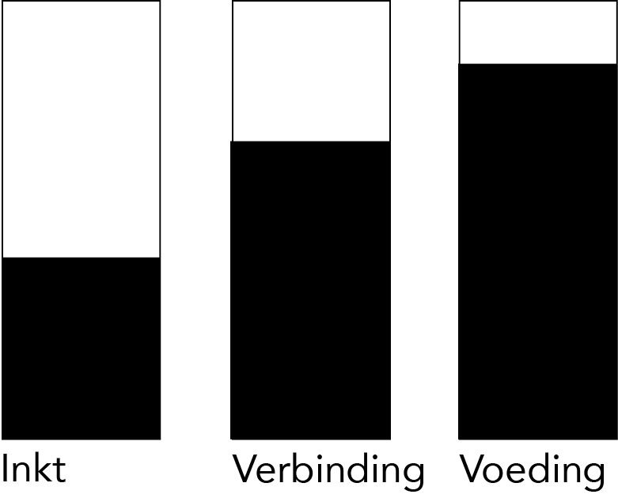
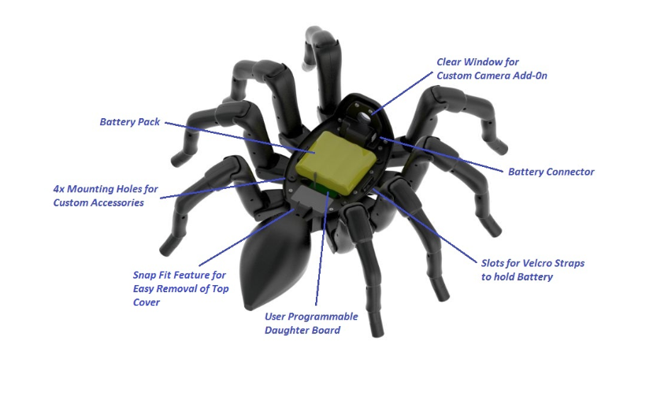

ARRTIFICIAL CREATURES
De laatste lecture van de HCI ging over artificial creatures. Artificial creatures zijn producten waarbij bepaalde eigenschappen zoals emoties worden toegevoegd door de mens zelf, waardoor ze niet meer als een een voorwerp worden gezien. In de laatste lecture ging het over een stofzuiger genoemd Roomba. Het product had bepaalde behoeftes nodig om zo goed mogelijk te werken. Mensen hebben ook bepaalde behoeftes om zo goed mogelijk te werken. De balans tussen deze behoeftes wordt ook wel het Homeostasis model genoemd en die ga ik dadelijk uitleggen doormiddel van een opdracht.Doordat er bepaalde eigenschappen aan een product wordt toegevoegd wordt deze menselijker.
Voor mijn opdracht heb ik gekozen om het Homeostasis model op een printer uit te oefenen. Om iets uit te printen heb je een laptop of een computer nodig die gebruikt maakt van een verbinding met de printer. Dit kan via wifi, een eerder ingestelde verbinding of via een kabel, maar laten we het kort houden met het woord verbinding. Voor de printer ook stroom nodig oftewel voeding. Om überhaupt iets op papier te krijgen heeft de printer ook inkt nodig om zijn taak uit te voeren. Hieronder heb ik een afbeelding van het Homeostasis model. Hoe verder de balkjes ingekleurd zijn, hoe meer de printer dit nodig heeft. De printer heeft sowieso stroom (voeding) nodig om aan te gaan en daarom is deze balk het meeste gevuld. Daarna komt de verbinding, omdat je anders niet kan uitprinten wat je wilt uitprinten. Als laatste komt de inkt, omdat je soms ook bepaalde items kunt uitprinten met een laag inkt percentage. De printer wordt mensenlijk gemaakt doordat hij net zoals een mens voeding moet krijgen om te werken en de verbinding is eigenlijk een externe factor van het apparaat. Het is de bedoeling dat er een balans is tussen deze behoeftes net zoals bij de mens om zo goed mogelijk te werken.

Research
Door de excursie was ik erg geïnspireerd door dieren die proberen te overleven. Zoals ik mijn excursie vertelde was ik erg bang voor spinnen, maar dat ik heb geleerd om ze meer te waarderen door het concept achter Warka Waters. Daarom heb ik gekozen voor de robot spin van het bedrijf Robuxgtix. Het is de T8X en het beweegt als een echte spin. De spin heeft 26 high tech servomotors in zich zitten. Het wordt aangedreven door Bigfoot ™ Robotics Engine, die geavanceerde robotica-algoritmen bevat, om het besturen van lopende robots mogelijk te maken.
Je kant op je tablad, computer of telefoon opdrachten geven. De Bigfoot ™ Robotics Engine zorgt dan automatisch dat dit werkt en coördineert dan de berekeningen van de benen en beweging etc. Wat ik zo bijzonder vond is het feit dat ik dus erg bang ben voor spinnen en ik dit als een echte spin zag en daardoor een artificial creature. De spin is te koop voor 950 dollar en er bestaat ook een limited edition met haar (nog enger).

Bronnen
Bigfoot ™ Robotics Engine
Reflectie
Dit opdracht vond ik erg interessant en ik vond het heel erg leuk om te zien wat voor verschillende artificial creatures er bestaan. Zo zijn er ook zeehonden die voor therapie bedoeld zijn. Het is bijna of de technologie mensen kan vervangen net zoals je dat in films ziet.